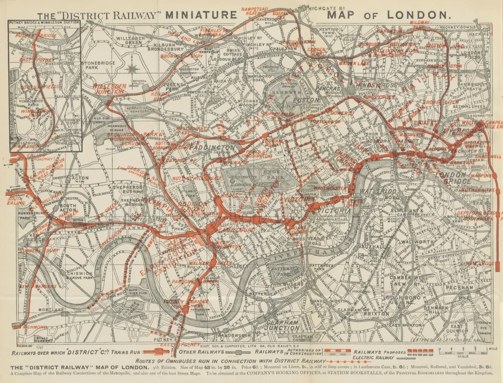
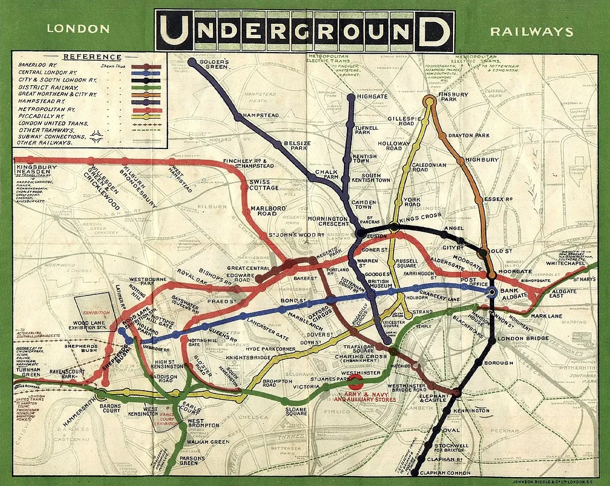
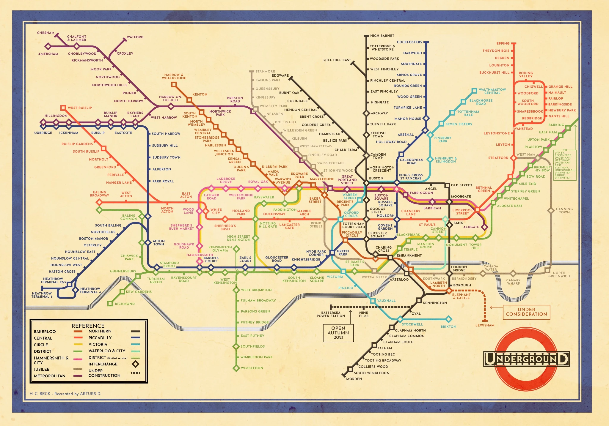
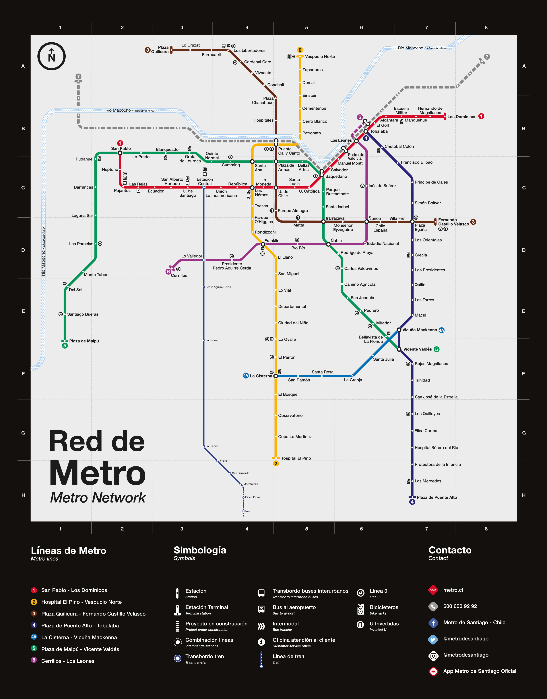

El mapa del metro de Londres, diseñado por Harry Beck, es una de las piezas gráficas más icónicas y notables del diseño, pues se convirtió en el modelo estándar para los sistemas de transporte subterráneo del mundo. Aunque suele pasar desapercibido para los pasajeros, fue una innovación clave para simplificar la lectura de las redes de metro.
Contexto de la pieza. El primer ferrocarril subterráneo del mundo fue el Metropolitan Railway de Londres, inaugurado en 1863. Su objetivo era reducir la congestión del tráfico, provocada por el gran flujo migratorio del campo a la ciudad durante la Revolución Industrial, un cambio para el que Londres no estaba preparado.
Con su inauguración surgieron los primeros mapas para orientar a los pasajeros. En sus inicios, estos diseños imitaban la geografía real de la ciudad para relacionar las líneas del metro con las calles de la superficie.

El problema comienza a aparecer. La precisión geográfica permitía relacionar el metro con la superficie, pero a medida que aumentaban las líneas, la información se acumulaba y el centro del mapa se volvía difícil de leer.
Con la expansión del servicio en 1908, las distintas líneas se unificaron en un solo mapa impreso en formato de bolsillo y póster, para mostrar el sistema de forma integrada y facilitar la orientación de los pasajeros por la ciudad.
Sin embargo, al mantener una precisión geográfica estricta, la zona central quedaba muy saturada, lo que dificultaba la lectura del plano.

La propuesta de Harry Beck. En 1931, Beck propuso un diseño completamente revolucionario: un diagrama que no era geográficamente correcto y que utilizaba únicamente líneas horizontales, verticales y diagonales de 45°.
Aunque su idea fue rechazada en un principio por considerarse demasiado radical, se aceptó con algunas modificaciones y se publicó oficialmente en 1933. Este nuevo esquema permitió que los usuarios se orientaran con mayor rapidez y facilidad.
Aunque el trazado se ha actualizado con los años, los principios de diseño establecidos por Beck se mantienen vigentes hasta hoy.

Antes. El mapa privilegiaba la fidelidad geográfica y mostraba calles, distancias y recorridos reales.
Con Beck. El mapa privilegia la comprensión del sistema: estaciones, conexiones y cambios de línea.
Función de la pieza: ¿Qué problema resolvía? El mapa resolvió el problema de la zona central, que quedaba muy saturada en los diseños anteriores y dificultaba la lectura del plano.
Trabajando como dibujante técnico, Beck aplicó a su diseño la misma lógica visual de los diagramas de circuitos eléctricos, priorizando la usabilidad por encima de la fidelidad del terreno.
Comprendió que el usuario no necesitaba conocer la distancia geográfica exacta de las calles, sino comprender con rapidez la red de conexiones entre las distintas estaciones.
Decisión de diseño. Reducir la fidelidad geográfica para aumentar la legibilidad. La forma deja de imitar el territorio y comienza a representar el funcionamiento de la red.
Legado: ¿Cómo se utiliza esa misma lógica visual en casos contemporáneos? El legado de este diseño es la lógica con la que se elaboran los mapas de metro en todo el mundo.
Sin esta innovación, los esquemas seguirían siendo geográficamente precisos; con el aumento de líneas y recorridos cruzados, se habrían vuelto complejos y difíciles de leer, perjudicando la experiencia del usuario.
Por esta razón, esta pieza es fundamental. Aunque parezca un detalle menor, facilita una acción cotidiana para miles de usuarios.
El diseño no siempre es extravagante; a veces se encuentra en lo que pasa desapercibido, y es precisamente esa invisibilidad lo que lo hace funcional y eficiente.
